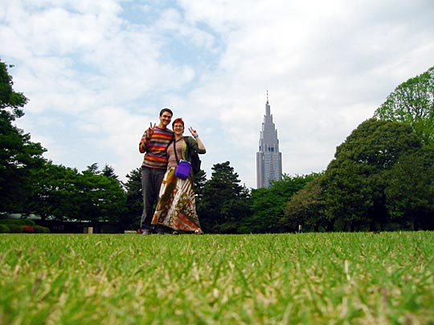

Photos from our second trip to Japan, 18 March–2 April 2005 are on Flickr
We took more than a 1000 photos over 10 days. The ones I've put online on the following pages are hopefully a judicious shortlist, but we're still talking megabytes here (individual photos are all 50-100kb). So if you're on a slow internet connection, I apologise. After each link you'll see the page weight — 1Mb = approx. 3 minutes on a dial-up connection. One suggestion is to open all the links below in separate windows (Shift-click on them), and then go for a long walk, say for an hour or so, and hopefully by the time you're back, most of them will have downloaded. Another suggestion is to open all the links, and while they're downloading, read the text on the pages.
Kelly's diary (much more in-depth and personal), can be found here [under construction].
Note to Mac users: Mac monitors have a different gamma setting to PCs'. All images may appear too light. If they do, it may help to temporarily reduce your monitor's brightness.
Shinjuku-gyoen park (day 9)
Camera used: Canon Digital Ixus 330
A number of people contacted me regarding this travel diary, and I'm happy to add their links where appropriate. (If you'd prefer not to be linked, please let me know.) Much of our research for our trip was informed by personal sites of this nature.